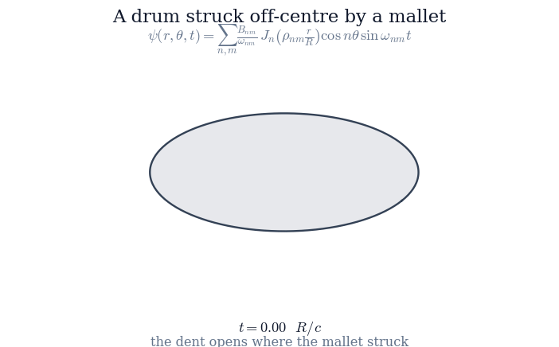
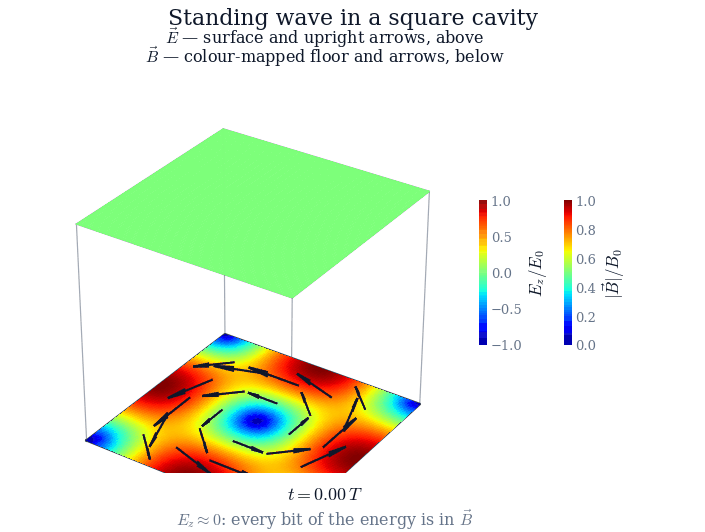
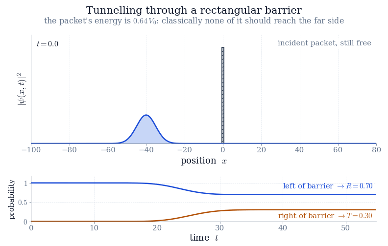
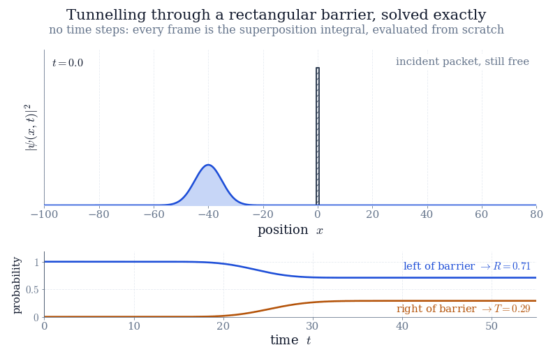

Worked examples
Download the project template (.zip) — the exact bundle to model yours on.
PHYS 3260
Download the project template (.zip) — the exact bundle to model yours on.

Why a Drum Has No Pitch: Modes of a Circular Membrane
A Standing Electromagnetic Wave in a Square Cavity
Quantum Tunnelling of a Wave Packet through a Rectangular Barrier (Numerical)
Quantum Tunnelling of a Wave Packet through a Rectangular Barrier (Analytical)Choose a problem in physics or engineering that interests you, solve it using the mathematical methods from this course, and visualise the result. Then write it up as a short report. The strongest reports are published here, on the course site, for future students to learn from.
You each have a problem of your own below. Bring me a different one if you would rather — something from your major, your research group, or your job — but clear it with me first, in a paragraph saying what the question is and which methods from this course will answer it. The test a proposal has to pass is the same one the problems below pass: the mathematics of this course has to be doing the real work, not decorating a simulation.
The project is worth 5%, added on top of the 100% of the course. It is extra credit: not doing it costs you nothing, and doing it well is the cheapest 5% you will ever earn.
You may use AI on any part of this. I would rather you did, and said so — it is how the work is done now. But it means the artefact cannot be what is graded, so the grade lives in the ten-minute presentation. Each problem below carries a question you should expect to be asked while you are standing there, and each one is chosen so that it cannot be answered by anyone who has not personally followed the derivation. Use whatever tools you like to build the thing; be able to defend every line of it.
One each, and no two of you have the same one. Each is stated the way the worked examples above state theirs: what you are given, and what you are to find, in parts. They are problems in mathematics — the physics behind each one is background, and you are told everything you need about it, so a problem from a field you have never studied is not a problem you cannot do.
Every one of them can be solved with this course, calculus and algebra. Where some step genuinely has no closed form, the problem says so and says exactly what the computer is allowed to do instead; everything else is meant to come out of a pencil. Take yours as it stands, or take it and push it somewhere I have not suggested.
The problem
A particle of mass moves in one dimension along a line carrying two identical rectangular barriers, each of height and width , separated by a gap of width :
Work in units with , and take , , . The particle is described by a complex function obeying the Schrödinger equation
and is the probability density for finding it at . Separating the variables (Chapter 10) with leaves an ordinary differential equation for ,
which has constant coefficients in each of the five regions where is constant. No quantum mechanics is needed past this point: everything below is solving that equation, matching the pieces, and adding them up.
Solve it on paper. Parts (a)–(c) are pencil work from end to end: a constant-coefficient ordinary differential equation solved in five regions, eight matching equations, five matrices multiplied, and algebra. Nothing is put on a grid and no differential equation is ever stepped forward in time — if you find yourself discretising the Schrödinger equation, you have left the assignment. Part (d) is exact too, but the -integral in it has no closed form for this potential, so evaluating that one integral is the only thing your program does. That is the same act as summing a Fourier series to draw a square wave.
What has to move. The packet. through the collision, with the two barriers marked on the axis: the packet arrives, part of it is thrown straight back, and part of it fills the gap between the barriers and stays there, leaking out both sides long after the reflected piece has gone. Underneath, three running curves — the probability to the left of the structure, between the barriers, and to the right — so that the filling and the draining are numbers and not an impression. Run a free packet (no barriers, and that one does have a closed form) alongside as a ghost, so the delay can be seen.
And the cheap one. No packet at all: sweep slowly through a resonance and show . Off resonance the gap is dark; on it the amplitude between the barriers stands up by orders of magnitude. Every frame of this second animation is a formula from (b) evaluated at one energy.
Be ready to answer, live. “One of your barriers on its own reflects almost everything at that energy. Two of them, with a gap, let all of it through. Where in the matrix product does the reflection cancel, and what decides how long the packet is held before it leaves?”
Send a single .zip of one folder named after your project. Inside it:
Maxwell/Maxwell.tex). It should have a title, open with
the problem itself, work out the mathematics, and present your results.figures/.Separately, hand in a ten-minute presentation — PowerPoint, Keynote or Beamer — covering the question, the mathematics, the figures and the conclusion; roughly one slide per minute. Put the equations in it as they appear in your report, and if your tool cannot set mathematics well, screenshot them from your PDF. The presentation is not part of the project folder and is not published here.
Make the animation the best thing you build. It is the preview on this page, and it is what decides whether anyone opens your project at all. Give it a caption that says what to watch for.
Open with the problem. Under the title, before anything you wrote about it,
put a problemstatement block giving what is known and what is to be
found, in parts — the way the worked examples above open. It is what
tells a reader what you set out to do before they read how you did it, and
writing it first is the cheapest way to find out whether your project is one
problem or three. Your abstract goes under it, printed by
\projectabstract, and everything from there down is your report.
Your .tex must compile to a PDF on its own, and it should use only
standard constructs (sections, equations, figures, lists) plus the helper
commands \projectinfo, problemstatement,
\projectabstract and \webanimation shown in the
template, so it also renders correctly on this website. The report is for the
physics and the mathematics: keep source code out of it, and let the figures
carry the results.
Say which methods from this course you used, where you use them — "separating the variables (Chapter 10)", "the Fourier transform (Chapter 7)" — not only in a list at the end. Half of the point of the project is recognising the course inside a problem it was not written for.
No student projects have been published yet. The first accepted projects will appear here.